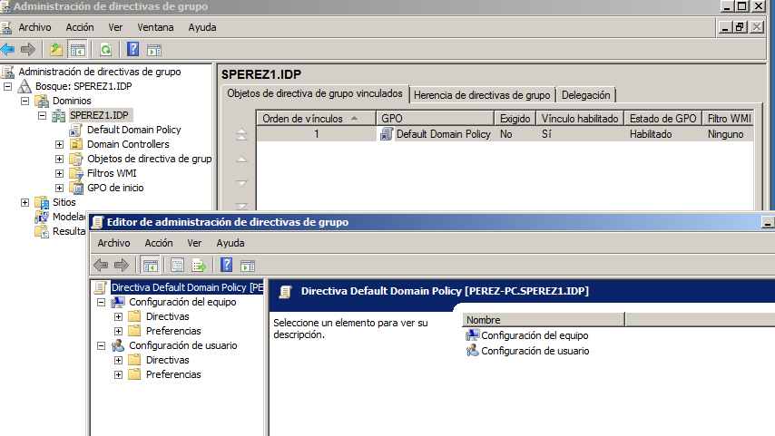

- Módulo: Sistemas Operativos
- Título del trabajo PCD-Políticas de grupos
- Componentes del grupo: Silvano Pérez Yanes
- Curso Académico: 2013/2014
- Fecha de entrega: 5 de Mayo de 2014
En esta actividad vamos a configurar las directivas de grupo, para que los usuarios que tenemos a disposición tengan algunas recstrinciones o privilegios en algunos aspectos del sistema operativo; para configurar las directivas se deben realizar en el servidor windows 2008 server, que es donde se controlan a todos los usuarios.
Poder configurar las directivas de grupo, es una ventajas si eres administrador de usuarios y quieres tener a los usuarios controlados y poder saber que usuarios tienen mas privilegios que otros; con estas medidas se puede conseguir que algunos usuarios esten destinados al uso de determinados programas y configuraciones del sistema operativo.